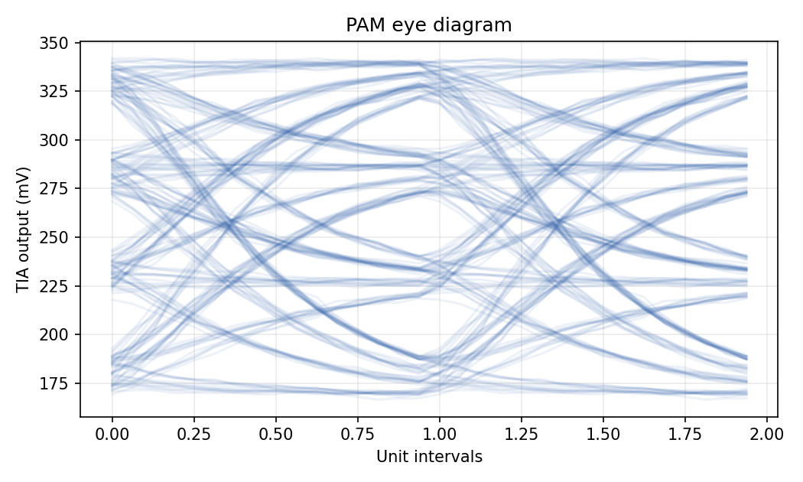
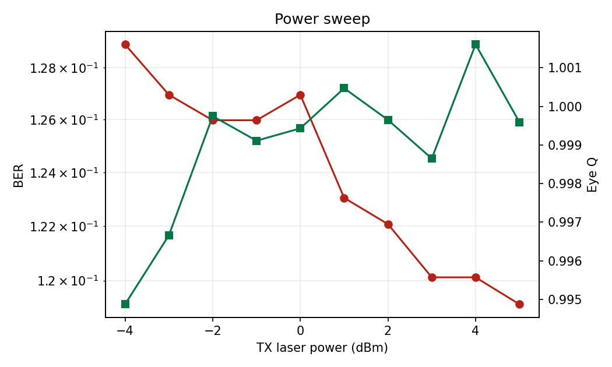
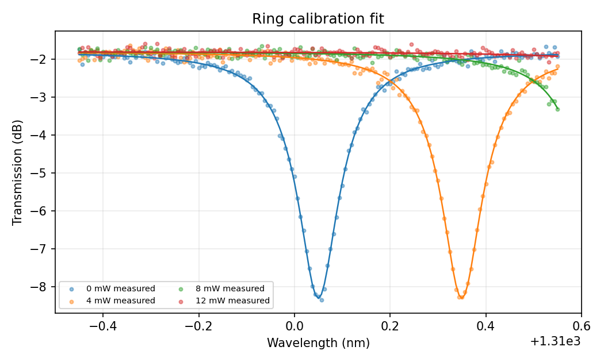
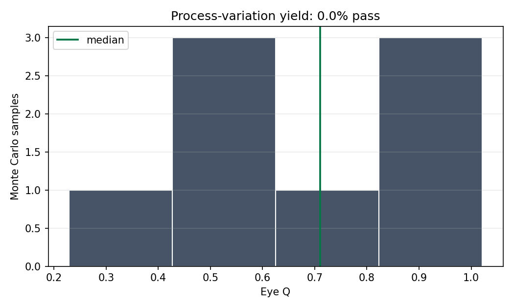
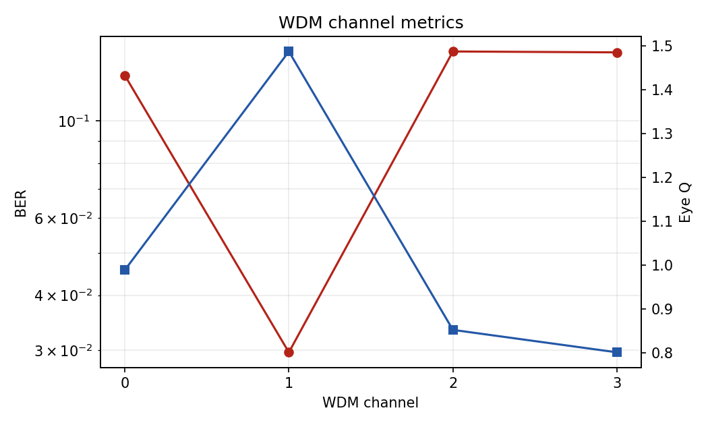

{
"metrics": {
"ber": 0.1220703125,
"ser": 0.244140625,
"symbol_rate_gbaud": 56.0,
"line_rate_gbps": 112.0,
"rx_voltage_pp_mV": 176.79623379106047,
"equalizer_taps": 7.0,
"min_eye_opening": 0.5556105338612203,
"mean_eye_opening": 0.567177350311931,
"q_factor_eye": 0.9996480418593198,
"mean_current_a": 0.00021542771261084186,
"shot_noise_a_rms": 1.5320059016648317e-06,
"rin_noise_a_rms": 1.2561486290503771e-06,
"total_noise_a_rms": 2.484944961362528e-06
},
"budget": {
"laser_power_dbm": 2.0,
"modulator_output_dbm": -3.231276076630618,
"passive_loss_db": 2.6,
"rx_optical_power_dbm": -5.831276076630618,
"photocurrent_uA": 214.13430326865398,
"tia_output_mV": 256.9611639223848,
"static_margin_db": 10.296562490566735
}
}